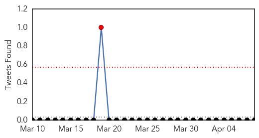

Dengue Fever
30-Day Web Trend
5 alerts, 0 warnings

30-Day Twitter Trend
1 alerts, 0 warnings

Article Locations

Article Confidences

Top Articles:
- 0.998
- Inner-city residents face greater risk of disease
- 0.982
- Increasing threat of vectorborne diseases discussed
- 0.970
- U.N. Attacks Biting Bugs that Spread Diseases — Naharnet
- 0.957
- Swedish researchers map the risks of new virus epidemic in Europe
- 0.943
- Vector-borne diseases: Lack of accurate data hampers policy formulation, says expert
- 0.907
- Simple preventive steps can control vector-borne diseases: Experts
- 0.866
- World Health Day 2014 observed : 08th apr14 ~ E-Pao! Headlines
- 0.849
- 'Breakbone' fever is coming to Europe thanks to global warming, Swedish scientists say
- 0.750
- Disease threatens flood-hit Solomon Islands
- 0.689
- Death Toll Rises to 23 in Solomons Floods — Naharnet
- 0.664
- Dabbawalas join hands with WHO
- 0.638
- Disease threatens flood-hit Solomons. Emergencies. Tengrinews.kz
- 0.600
- Scientist may have key to nodding syndrome
Top Tweets:
-
No tweets found for Apr 08, 2014
MERS
30-Day Web Trend
0 alerts, 0 warnings

30-Day Twitter Trend
2 alerts, 0 warnings

Article Locations

Article Confidences

Top Articles:
Top Tweets:
- 0.515
- RT: Saudi-Media rpt:An emergency room closed after 11 health care workers sick w/ coronavirus at 5 Jeddah hospitals http://t…